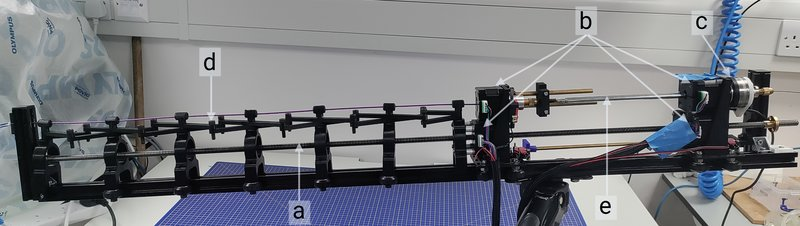

Academic bedside robots · kclneuro_sadati2025
KCL lead-screw
KCL lead-screw neurointervention manipulator

1 / 6


- Family
- Academic bedside robots (academic)
- Devices
- 0.035 in guidewire (180 cm Terumo) + 0.058 in Navien support catheter (125 cm) (towardb); jackson2026: Terumo Glidewire + Penumbra SlipCath Beacon, Penumbra Neuron MAX fixed (Sec. III-B); concentric shafts allow up to three devices (guidewires, microcatheters, stent retrievers; jackson2026 Sec. II-B)
- Degrees of freedom
- 2 per carriage (translation, rotation); 4 with two devices
- Push
- Linear stage
- Twist
- Rotating clamp
- Tested up to
- Phantom
- Sim-to-real
- Yes — A controller or perception model trained in simulation ran on this robot.
Testing
- Highest level
- Phantom
- What was tested
- in-vitro printed phantoms: 10 episodes per task (HM-MARL), 5 runs per task n=25 (world model), 5 runs per sub-task (progressive); 10 neuroradiologists x 8 runs in the haptic leader study
- Key numbers
- HM-MARL in vitro right ICA 100% (A12) and 70-80% (A23), left 0%; manual expert 10/10 right, 2/10 left; world model 68% vs SAC 60% in vitro; max 40 mm/s translation, 180 deg/s rotation
Mechanism
- Push (translation)
- linear-stage+clamp (carriages on one 1 m, 2 mm-pitch lead screw; telescopic tubes between carriages against buckling)
- Twist (rotation)
- hollow-shaft NEMA 17 stepper per carriage with drill-chuck coupling
- Device range
- two device sizes used; range N.R.
- Target anatomy
- neurovascular: femoral artery to carotid / ICA in printed phantoms of patient CTA
Sensing and interface
- Force sensing
- ATI Mini 58 six-DOF force sensor in the guidewire carriage, proximal axial/lateral/torsional forces at 250 Hz (jackson2026 Sec. II-B, Fig. 2(c)); phantom with eight piezoresistive wall-force sensors (Fig. 3)
- Leader and haptics
- yes in jackson2026_manual: device-mimicking dual-device handle (buttons select catheter, guidewire or both) on MyActuator RMD-L 4015 brushless motors, force reflection at 250 Hz; compared with manual, joystick and haptics-off (Sec. II-A, Fig. 1)
- Imaging
- overhead camera or mobile C-arm (Siemens Cios Spin) tracking; robot and phantom under the mobile C-arm in a mock angiography suite (jackson2026 Fig. 4(a)); no MR claim
- Sterility
- N.R.
Size
- Footprint (mm)
- 1 m lead screw on 20x20 mm aluminium frame; other dimensions N.R.
- Mass (kg)
- N.R.
Simulation
- Simulation model
- yes: stEVE / SOFA BeamAdapter patient-specific CTA models (Navien and Terumo wire, E = 47 and 43 MPa) - robertshaw2026_towardb
- Sim-trained controller
- yes: hierarchical multi-agent SAC (RA-L 2026): sim 92-100% single anatomy -> in vitro 100/70-80% right, 0% left; TD-MPC2 world model 58% sim holdout -> 68% bench; progressive fusion 90% sim -> 60/67% bench (the sim-to-real study table, robertshaw2026_towardb read full)
- Studies on this robot
- 2026 · Progressive Experience Fusion for Multi-Task World Model Control in Endovascular Navigation — sim 90% on 10 unseen vasculatures; robot 60% without, 67% with fine-tuning (p = 0.623)
- 2026 · Toward Safe Autonomous Robotic Endovascular Interventions using World Models — sim hold-out 58% (n = 250) TD-MPC2 vs 36% SAC; robot 68% vs 60% (p = 0.567); left common carotid 0/5 both
- 2026 · Toward AI Autonomous Navigation for Mechanical Thrombectomy Using Hierarchical Modular Multi-Agent Reinforcement Learning (HM-MARL) — sim A1,2 right 100%; A2,3 right 100%; A1,2 left 100%; A2,3 left 94% (50 episodes); robot 100%, 70% (80% with 10-anatomy agent), 0%, 0%
Versions
- Lineage
- Hamlyn Symposium 2025 (Sadati, long CTR in vitro); RA-L 2026 HM-MARL; IROS 2026 world model; arXiv 2026 progressive fusion; arXiv 2607.07253 haptic leader study
Sources
- Toward AI Autonomous Navigation for Mechanical Thrombectomy Using Hierarchical Modular Multi-Agent Reinforcement Learning (HM-MARL) · IEEE Robotics and Automation Letters, 2026 · doi:10.1109/lra.2026.3664661 [robertshaw2026_towardb]
- Toward Safe Autonomous Robotic Endovascular Interventions using World Models · link [robertshaw2026_safe]
- Progressive Experience Fusion for Multi-Task World Model Control in Endovascular Navigation · link [robertshaw2026_progressive]
- Manual, Joystick, or Haptic Control? An In Vitro Comparison of Navigation Strategies for Robotic Interventional Neuroradiology Procedures · link [jackson2026_manual]
Notes
- Notes
- Fig. 3 caption of towardb calls the device a 'concentric tube robot' [Sadati 2025]; id kclneuro_sadati2025 is the proposed id in the sim-to-real study table. | 2026-11-08 X3: jackson2026 read in full: two NEMA 17 steppers (24 V, 600 mA, 80 Ncm), one for lead-screw translation and one for rotation; scissor-frame and telescopic-tube anti-buckling (Sec. II-B); 10 neuroradiologists (4 novices, 6 experts) x 8 navigations; wall forces stayed below 0.70 N with every controller; manual 47.7 s vs haptic-on 248.7 s, haptic-off 314.7 s, joystick 392.6 s (Abstract)
This record
- Read level
- full
- Picture
- jackson2026_manual Fig. 2 (arXiv 2607.07253v1 HTML figure https://arxiv.org/html/2607.07253v1/Figs_robot_figure.png; page https://arxiv.org/html/2607.07253) ↗ — licence: CC BY 4.0; grade C
- Picture changes
- downloaded PNG 2888x989; cropped; letter tags a-e and their white arrows kept (arrows end on the frame and motors); not upscaled
- Found by
- academic: Search of academic bedside robots.
- Data
- JSON · YAML:
records/robots/kclneuro_sadati2025.yaml - Correction
- Suggest a correction [repository not created yet]